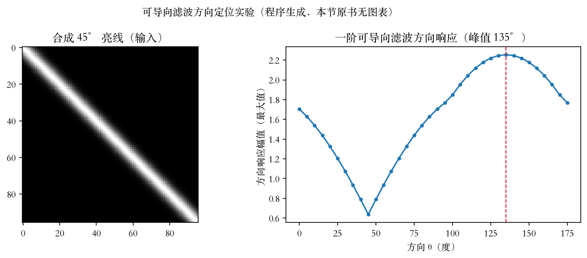
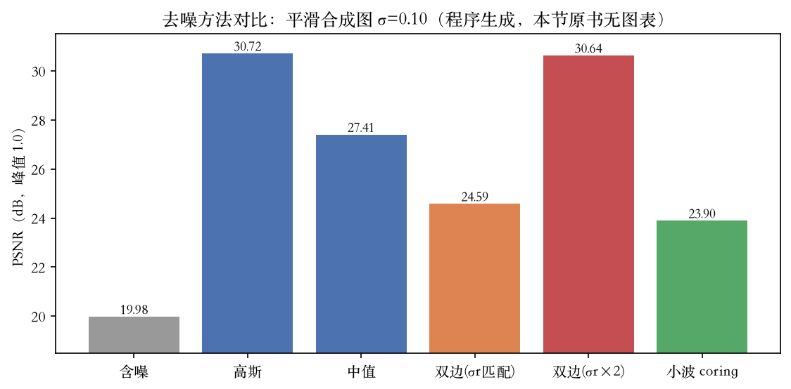
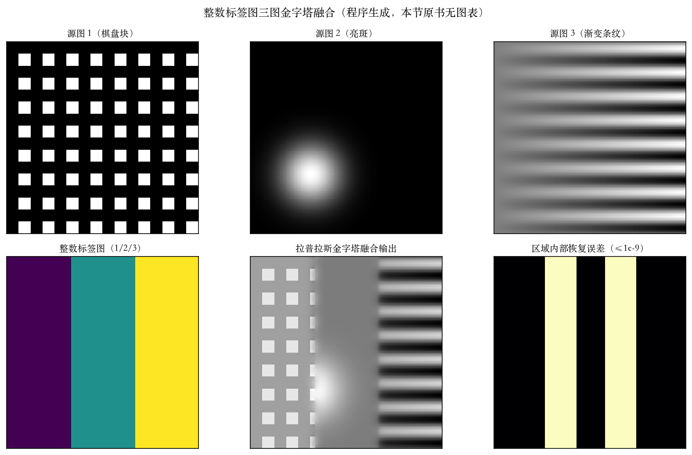

综合实验课 · 第 2、3 章习题
第一堂上机课：七道题动手做
第 2 章两道手算，本集不上机。
第 3 章留过九道，本集上机七道。
补全模式：下标夹到边界，再取像素。
两趟卷积等价，计时快两倍多。
依据：原书第 181–182 页；本集实验
作业台账
第 2 章：两道手算，不上机
第 3 章：九道动手，上机七道
留白两道，结尾交代
每道题都有数值断言
正课第二十六集
01 / 6
原书第 183 页 · 习题 3.13
转向滤波：方向变，核不用重算
输出 0°、90° 两条一阶基带。
方向核 = cosθ·横核 + sinθ·纵核。
45° 亮线峰值 135°，即线法向。
十字两臂 135°/45°，交点中心近零。
依据：原书第 183 页；本集实验

转向滤波：45° 亮线与方向响应，峰值 135°｜程序生成，未用教材或论文原图
正课第二十六集
02 / 6
原书第 183、188 页 · 习题 3.12 + 3.28
三法去噪：两档噪声的读数
轻噪：含噪 27.9，高斯 32.2，中值 32.8。
双边对准 30.3，放宽两倍 33.4。
重噪：含噪 20.1，高斯 29.0，中值 26.7。
双边对准 24.0，放宽 28.3；三法都赢。
依据：原书第 183、188 页；本集实验
噪声估计敏感性
双边吃噪声参数：差 4.4 分贝
高斯、中值：无噪声参数
条纹图放宽反而分高
评分尺偏爱平滑，未测结构指标
正课第二十六集
03 / 6
原书第 186、188 页 · 习题 3.21
小波 coring：先估噪声再压系数
白噪声过两级提升高通，放大 1.5 倍。
中位绝对偏差 ÷ 0.6745 ÷ 增益。
估出 0.103，真值 0.10，相对 2.7%。
coring 19.98 → 23.90 分贝。
依据：原书第 186 页；本集实验

去噪对比：平滑合成图、噪声 0.10，高斯 30.72 最高｜程序生成，未用教材或论文原图
正课第二十六集
04 / 6
原书第 185 页 · 习题 3.18
标签图融合：权重和靠补全模式
三图建拉普拉斯金字塔，标签图建高斯金字塔。
复制式补全：每层权重和恒为 1。
零填充：最低 0.33，外圈 252/4096 亏空。
归一化与否，取决于边界补法。
依据：原书第 185 页；本集实验

标签图三图融合：三源图、标签图、输出与恢复误差｜程序生成，未用教材或论文原图
正课第二十六集
05 / 6
把关 · 台账 · 收束
六处注入，五处被断言拦住
六处注入：五处挂断言，一处靠偏移现形。
上机七道；七项只做了一部分，逐项记账。
留白：3.5 第四步、3.25；4.3 随第 4 章。
下一集复盘第 2、3 章，再进第 4 章。
依据：本集实验；原书第 181、187 页
部分完成 7 项
3.12 锐化/模糊；3.13 角点/真实图
3.21 金字塔对比；3.28 序列/低光
3.9 模式优缺点；3.18 曝光融合
3.10 选做 Perona
正课第二十六集
06 / 6